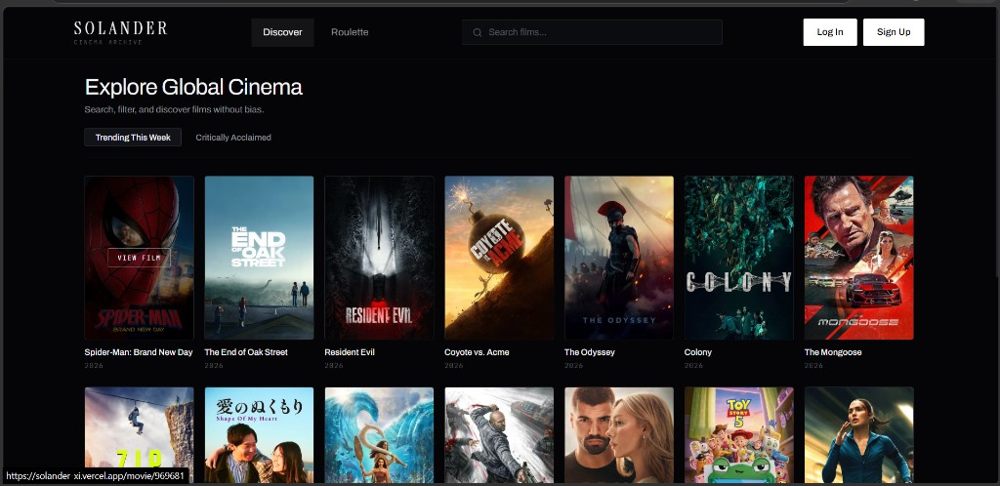
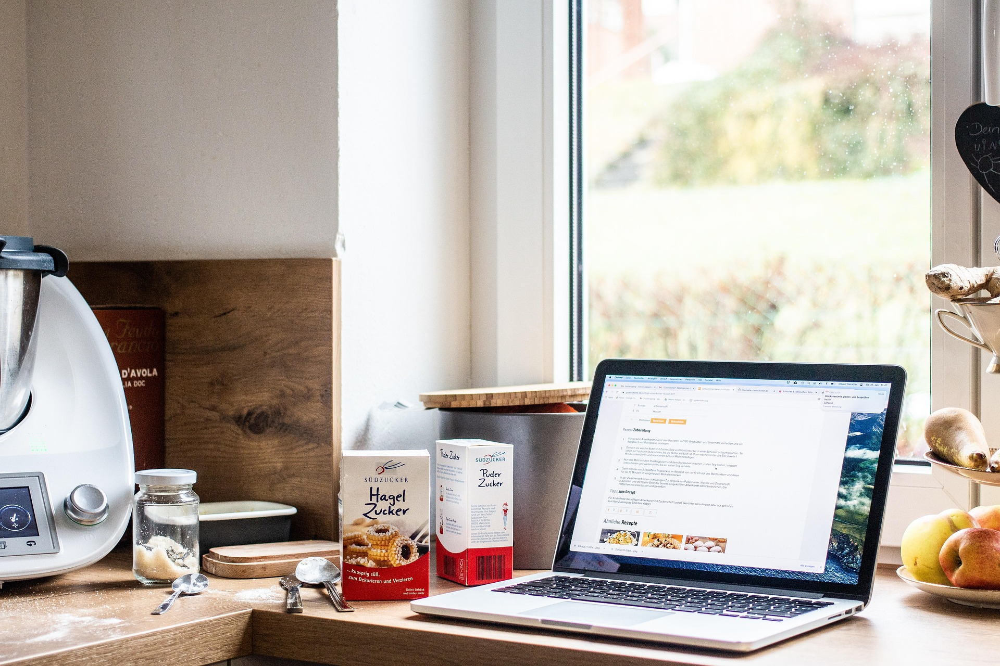

Solander
A full-stack movie discovery platform built for exploring films, curated spotlights, and detailed cinema archives with a streamlined user experience.
Software Engineering & Full-Stack Development
Software engineering student working across the stack, from designing normalized databases and backend services to building clean, responsive interfaces and writing thorough test suites.

A full-stack movie discovery platform built for exploring films, curated spotlights, and detailed cinema archives with a streamlined user experience.
A database system for monitoring satellites, orbits, ground stations, and telemetry data, with a web dashboard on top. Designed the full ER/EER model and normalized schema through 3NF.
View on GitHub →A packet classifier built from scratch and tested using a full range of techniques, including boundary value analysis, equivalence class testing, and state machine testing.
View on GitHub →
A recipe rating platform that uses sentiment analysis on user reviews, built with .NET and MSSQL.
View on GitHub →I'm a software engineering student who works across the stack, from building interfaces to writing test cases and tracking down defects. I like making things that actually work and don't look bad either.
I enjoy working with clean architecture, well-structured databases, and building web apps that feel polished and reliable. When I'm not writing code or debugging test cases, I'm usually learning new tools and refining my projects.
React · HTML · CSS · JavaScript
Node · Express · MongoDB
C++ · Firebase · Cisco · Git